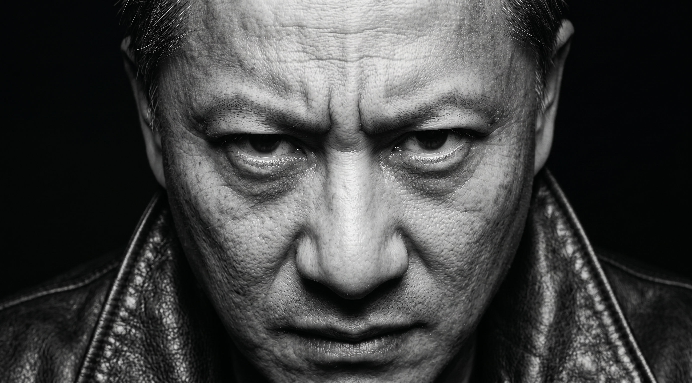
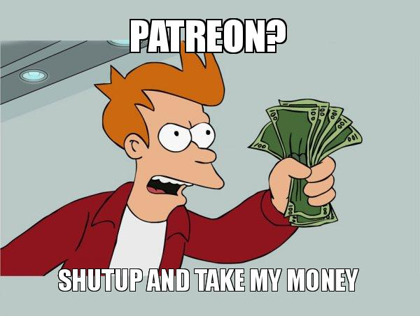

Вплив цифрової економіки
для людства
Бла-бла-бла

Від індустріалізації до цифровізації
Ще недавно ключем до успіху були гроші та ресурси. Щоб вийти на ринок, компаніям були потрібні мільйони на побудову заводів, складів та розгалуженої логістики.
Сьогодні фокус змістився. Найдорожчі компанії світу не володіють заводами. Їхня головна зброя та актив — це алгоритми, цифрові платформи та безперебійний потік інформації.
Еволюція чи Революція?
Цей перехід означає, що традиційні перешкоди для бізнесу просто зникли.
Вам більше не потрібен стартовий капітал у десятки мільйонів доларів. Завдяки хмарним технологіям, інтернету та аутсорсингу, глобальний стартап можна запустити буквально з кімнати в гуртожитку.
Здавалося б, ринок став абсолютно відкритим і чесним для всіх. Але чи справді це так? Наступний крок розвитку показав, що гра стала ще жорсткішою.
На зміну фізичним обмеженням прийшли невидимі: цифрові стіни, пробити які новачкові майже неможливо.
Мережеві ефекти
Цінність продукту тепер залежить від кількості людей у ньому. Створити нову соцмережу легко, але як переманити туди користувачів, якщо всі їхні друзі вже в Instagram?
Монополія на Big Data
Хто володіє даними, той диктує правила. Великі корпорації знають про споживачів усе, що дозволяє їм тренувати найкращі алгоритми і залишати конкурентів позаду.
Екосистеми
Компанії будують "золоті клітки". Якщо у вас iPhone, Mac та Apple Watch, ви навряд чи перейдете на інший сервіс. Виходу з екосистеми просто немає.
Нові правила виживання: Гіперконкуренція
Експоненційна швидкість (Winner-takes-all)
Інновації більше не впроваджуються роками. Нова технологія може змінити індустрію за кілька тижнів, а життєвий цикл продуктів скоротився до мінімуму.
Принцип «переможець отримує все». У цифровому світі рідко буває 10 рівноцінних конкурентів. Зазвичай є один лідер, який забирає 80% ринку, і всі інші.
Адаптивність як валюта
Виживає вже не той бізнес, що має найбільше грошей, а той, що здатен найшвидше перелаштувати свою модель під нові умови.

Як це виглядає на практиці: Феномен Patreon
Самостійність
Щоб не бути голослівним, погляньмо на ринок контенту. Раніше музикант чи письменник тотально залежав від продюсера чи видавництва. Це був непробивний старий бар'єр.
Менше посередників
Платформи на кшталт Patreon повністю зруйнували цю стіну. Тепер автори напряму монетизують свою творчість від фанатів (Direct-to-Fan).
Смарт-рішення
Фокус змінився: тепер треба боротися не за контракт із лейблом, а за кожну секунду уваги кінцевого слухача в океані іншого контенту.
Що виграє бізнес від цих змін? (Позитивні наслідки)
Малий бізнес отримав доступ до інструментів штучного інтелекту, аналітики та глобальних аудиторій, які раніше були доступні лише транснаціональним корпораціям.
Якщо ваш цифровий продукт хороший, його можна продати мільйону людей на іншому кінці світу за лічені хвилини без витрат на доставку.
Аналіз поведінки дозволяє не стріляти з гармати по горобцях, а пропонувати товар саме тій людині, яка його зараз шукає.
Приховані загрози (Негативні наслідки)
Проте, захоплюючись можливостями, ми часто забуваємо про серйозні загрози.
Цифрова економіка створює середовище, де вижити стає ще складніше через тотальну залежність від технологічних гігантів. Ці ризики можуть знищити бізнес за одну ніч.
Диктатура алгоритмів, Засилля монополій та Питання етики та безпеки
Зміна правил ранжування у Google чи Facebook може миттєво обвалити ваші продажі. Гіганти скуповують успішні стартапи на ранніх стадіях, не даючи їм шансу вирости у самостійних конкурентів. Масовий збір даних постійно балансує на межі порушення приватності та провокує регулярні кіберзагрози.
Українські реалії
Український бізнес звик до постійних шоків, тому вміє блискавично впроваджувати інновації.
Ми успішно компенсуємо нестачу великого капіталу потужним інтелектуальним ресурсом.
Цифровий простір дозволяє вітчизняним компаніям обходити логістичні проблеми та продавати у всьому світі..
Надіємось на краще, а готуємося до найгіршого, оскільки надія - одне із небагатьох, що, поки, не зникло.
Дякую за увагу!!!!!!!!!
Я неготовий відповісти на ваші запитання щодо презентації, тому якщо ви це прочитали, зробіть вигляд, що відійгли :3